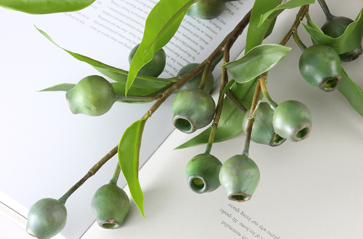
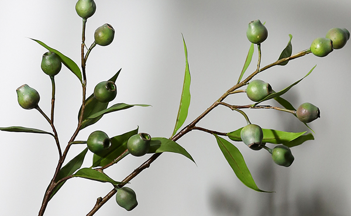

桉树果是一味具有祛风、杀虫消炎的中药，还有很多人用晒干的桉树果来做干花当装饰品，那么桉树果多少钱一斤呢，下面中药大全小编和大家来看看2018年桉树果价格。

现在四川荷花池市场的桉树果价格在7元，在过去几年中桉树果价格的一直保持在6-8元之间。

但是人们喜欢把桉树果晒干，染色做成装饰品，我们来看看桉树果干花的价格。
桉树果大束：6元
桉树果单支：0.4元
桉树果单颗：0.1元
以上为桉树果价格，查看更多中药价格请关注中药大全。
桉树果图片
桉树果功效